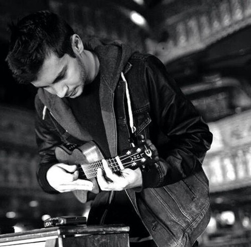

Биография Тайлера Джозефа
солист группы Twenty One Pilots.
Ранняя жизнь
Тайлер родился в городе Колумбус, штат Огайо. У него два брата, Зак (тоже певец) и Джей, и сестра Мэдисон. Его мать, Келли, была учителем математики в школьном округе Olentangy. Его отец, Крис, был тренером в христианской Средней школе Worthington с 1996 по 2005, и является руководителем школы. Тайлер играл в баскетбол с детства и продолжал играть в роли разыгрывающего защитника в баскетбольной команде Worthington. В 2008 году баскетбольная команда заняла второе место в Division IV.
Узнав, что композиторы выступают в High Street club, он отказался от баскетбольной стипендии, которую ему предложил университет Otterbein, и начал заниматься музыкой, после того как откопал старую музыкальную клавиатуру в шкафу (Рождественский подарок от мамы).
Карьера
У Тайлера был сольный проект, он записал EP под названием No Phun Intended. EP был записан Тайлером в 2007-2008 году, в эти годы он еще учился в средней школе. Все песни он записывал в подвали своего дома.
В 2010 году Тайлер сотрудничал с христианским рэппером Jocef и записал совместную песню с ним и другими певцам под названием "Live". Песня являлась первым треком к дебютному альбому In Search Of: L. O. V. E. Тайлер и Jocef вместе написали этот трек. Спустя год Jocef принимал участие в песне "Be Concerned" от Twenty One Pilots.
В 2011 году, Тайлер участвовал в Five14 Church's Christmas со звездами в Нью-Олбани, штат Огайо. Там он спел "O come, O come, Emmanuel", официальное видео выступления было загружено на YouTube 14 февраля 2014 года.
В 2012 году, Тайлер был показан в видео "What's Your Story" Марка Эшлемена, который является продюсером многих клипов группы Twenty One Pilots.
Тайлер также записал несколько треков для Five14 Church's в жанре worship.
Личная жизнь
Тайлер – Христианин и его вера влияет на музыку, которую он пишет. В детстве он был на домашнем обучении. Тайлер помолвлен с Jenna Black.
Его первый опыт с музыкой был связан с христианской хип-хоп группой DC Talk.
А теперь о тату. Тайлер не хочет, чтобы смысл его тату знали все фанаты, но вот что он сказал о тату на левой руке: “это что-то, что спасло мне жизнь”
Многие уверены, что это связанно с его верой. Тайлер заявлял несколько раз, что он готов рассказать человеку что означает тату, но только если человек спросит у него лично и только один на один.
У Тайлера и Джоша есть татуировка “X”, которая символизирует их преданность к поклонникам в своем родном городе Колумбус, Огайо. Они набили тату на Lifestyle Communities Pavilion, 26го апреля 2013 года. У Тайлера тату находится на правом бицепсе, а у Джоша на шее за правым ухом.
Тайлер признался, что он не большой любитель играть в видеоигры, но в гастролях, в свободное время, Тайлер и Джош играют в Mario Kart 64 на Nintendo 64.
(c) 2016 The Toxic Void. Designed by Aliste